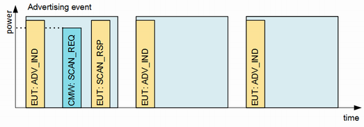
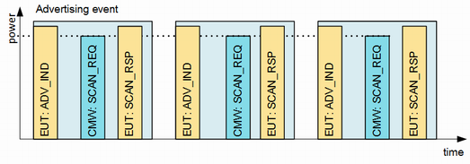
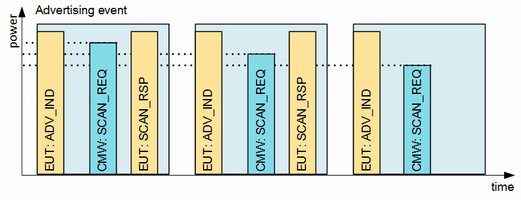

Measurement Mode
The Rx measurement provides three modes:
- Spot check: The R&S CMW transmits one SCAN_REQ packet at the specified power level and analyses the EUT's reaction.

Spot check - PER measurement: The R&S CMW transmits the specified number of SCAN_REQ packets at constant power level and calculates PER statistics.

PER measurement - Sensitivity search measurement: The R&S CMW transmits SCAN_REQ packets at decreasing power level and searches for the minimum power level sufficient for SCAN_RSP reception.

Sensitivity search measurement